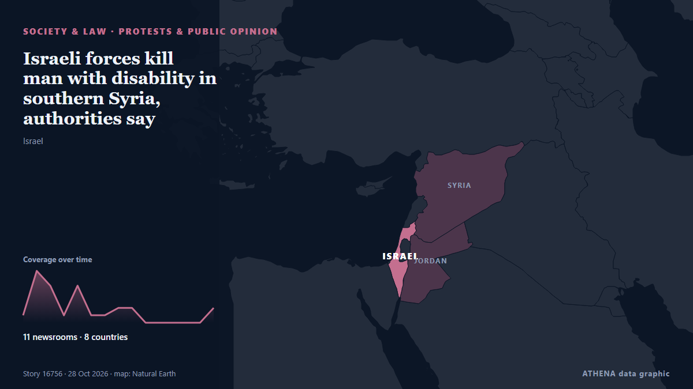

Israeli forces kill man with disability in southern Syria, authorities say

Israeli forces deploy snipers on rooftops, raid houses in Jamlah village in western Daraa. из Anadolu Agency (English)
Независимые источники: 11 изданий в 8 странах, с 21 окт.; первым сообщил Asharq Al-Awsat (English); освещение идёт на спад. ATHENA оценивает риск как повышенный (5.4/10), прежде всего из-за тяжести описываемого ущерба и географического и отраслевого охвата. Уверенность — 86 % (высокая); подтверждают независимые источники: 11 изданий, средняя надёжность источников — 80 %. Кто сообщал: 9 СМИ в стране Саудовская Аравия · Saudi Arabia, 3 СМИ в стране Турция · Turkey, 2 СМИ в стране Катар · Qatar. Освещение шло с 21 окт. по 28 окт., 173 ч.
Почему это важно: Правовые и политические изменения меняют права, обязанности и государственные услуги для затронутых людей.
Что изменилось: 2 новых сообщений от 1 редакций за 24 часа до 28 окт..
Заголовки приводятся на английском языке, как они были опубликованы.
Коротко в цифрах
Отобрано, оценено и написано по опубликованной методологии ATHENA. Ни один редактор не вмешивается в отдельные события. Как это создаётся ›
| 21 Oct 09:24 UTC | 1 |
|---|---|
| 21 Oct 21:24 UTC | 7 |
| 22 Oct 09:24 UTC | 5 |
| 22 Oct 21:24 UTC | 1 |
| 23 Oct 09:24 UTC | 5 |
| 23 Oct 21:24 UTC | 1 |
| 24 Oct 09:24 UTC | 1 |
| 24 Oct 21:24 UTC | 2 |
| 25 Oct 09:24 UTC | 2 |
| 25 Oct 21:24 UTC | 0 |
| 26 Oct 09:24 UTC | 0 |
| 26 Oct 21:24 UTC | 0 |
| 27 Oct 09:24 UTC | 0 |
| 27 Oct 21:24 UTC | 0 |
| 28 Oct 09:24 UTC | 2 |
| 22 Oct 07:04 UTC | 5.2 |
|---|---|
| 22 Oct 08:38 UTC | 5.8 |
| 23 Oct 06:40 UTC | 5.0 |
| 23 Oct 15:32 UTC | 5.6 |
| 28 Oct 14:46 UTC | 5.4 |
Откуда эти цифры
Значимость
Риск
Уверенность
Освещение — кто сообщил и когда
заголовок в оригинале · открывает источник- Asharq Al-Awsat (English) · Саудовская Аравия · Saudi ArabiaSyria: Israeli Forces Shell Quneitra Countryside
- Anadolu Agency (English) · Турция · TurkeyIsraeli fire kills young man with disabilities during incursion into southern Syria
- Middle East Eye · INTIsraeli military incursion reported in Syria's Daraa
- Middle East Eye · INTIsraeli troops shoot dead man with disabilities in Syria's Daraa
- Middle East Eye · INTIsraeli forces advance into village in Syria’s Quneitra
- The New Arab · INTIsrael kills man with disability in Syria: report
- The National · ОАЭ · United Arab EmiratesIsraeli forces kill disabled Syrian in raid on homes in Deraa
- Asharq Al-Awsat (English) · Саудовская Аравия · Saudi ArabiaMan with Disability Killed by Israeli Fire in Syria
- Al Jazeera English · Катар · QatarIsraeli forces kill disabled man in southern Syria raid, state media says
- Arab News · Саудовская Аравия · Saudi ArabiaJordan’s King Abdullah rejects Israeli attacks on Syria amid deadly Daraa incursion
- Arab News · Саудовская Аравия · Saudi ArabiaMan with Down syndrome killed in Israeli raid in southern Syria, residents say
- Anadolu Agency (English) · Турция · TurkeyUN condemns killing of Syrian civilian with disability by Israeli forces in southern Syria
- Middle East Eye · INTIsraeli forces kill man with disability in southern Syria, authorities say
- Al Jazeera English · Катар · QatarIsraeli forces accused of killing disabled man in Syria raid
- Al-Monitor · Соединенные Штаты · United StatesHundreds of Syrians protest repeated Israeli incursions
- Asharq Al-Awsat (English) · Саудовская Аравия · Saudi ArabiaHundreds of Syrians Protest Repeated Israeli Incursions
- Anadolu Agency (English) · Турция · TurkeyIsraeli artillery fire hits outskirts of 2 villages in Syria’s Quneitra province
- Arab News · Саудовская Аравия · Saudi ArabiaProtests erupt across Syria after Israeli forces kill man with Down syndrome
- Shafaq News (English) · Ирак · IraqSyrians protest Israeli incursions after civilian killing
- Middle East Eye · INTProtest rallies held in Syria against repeated Israeli incursions, attacks
- The Jerusalem Post · Израиль · IsraelProtests spread across Syria after disabled man dies in Israeli raid on village
- Arab News · Саудовская Аравия · Saudi ArabiaIsraeli forces detain 3 during latest incursion in southern Syria
- Arab News · Саудовская Аравия · Saudi ArabiaIsraeli forces set up checkpoint, bulldoze farmland in Syria’s Quneitra
- The New Arab · INTIsraeli forces advance in Syria’s Quneitra; Daraa officer killed
- Arab News · Саудовская Аравия · Saudi ArabiaIsraeli forces shell southern Syria village after raid: state media